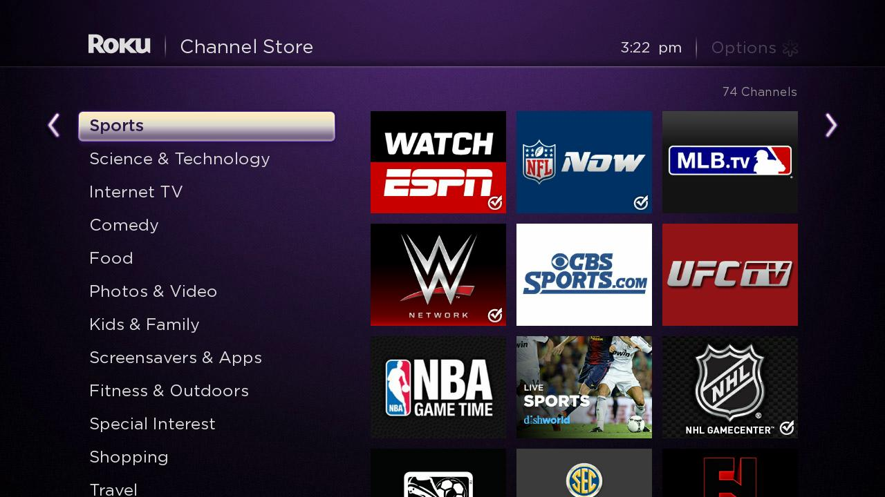

Using data science to put great sports footage into fans' hands, with less time commitment.
Too Much Great Content
Sports fans currently have far more exciting footage to watch than every before. Unfortunately, they don't have the time to watch it all.
Easy-to-Use Algorithm
Our model identifies the most exciting moments from recorded sports matches, and classifies them so we can assemble higher potency, more compact, content.
A Better Way to Watch
Sports Highlighter generates short-form games that allow fans to watch more of the moments that count, while staying fully immersed in the event.
The Context
Sports are very big business.
Ample Revenue
The sports industry grosses between $600-700 billion per year.
Global Market
Over a billion active sports fans and a growing mobile market.
Insatiable Fanbase
Sports fans watch 8.1 hours of sports footage each week.
Not Enough Time
Viewers are forced to make tradeoffs and can't watch all events they want.
Our goal is to create incredible short-form sports content that gives viewers the high quality footage in less time.
The Solution
Part I. Classification
Fourier Fast Transform
Magnitude and pitch measured for each second of footage for over 30 complete soccer games.
Principle Component Analysis
FFT data transformed into 170-dimensions via PCA to allow for classification and to avoid overfitting.
Ensemble Method
Weighted model anchored by Gradient Boosting, K-Nearest Neighbors, Random Forest and SVM classifiers.
Over 93% accuracy when trying to predict goals vs. non-goals.90% accuracy when including missed goals.
Part II. What is Interesting and What is Not?
Chyrons
Text extraction from images gives us clarity around when scores happen.
Audio
Sound dynamics could reveal when relevant plays occur.
Crowd Reaction
Crowd volume at key moments could reveal major events.
Scene Detection
Understanding video transitions helps to identify key moments when creating video clips.
K-means Clustering
A look beyond goals and non-goals to understand predictive features for other meaningful events, like yellow cards, missed goals and injuries.
Audio Separation
Breaking out the commentator from the crowd to increase feature fidelity.
Part III. Finding a Compelling Clip
Sports Highlighter takes into account a rolling 10-second average of FFT.
Below are the specific moments our algorithm determined are likely highlights, in order of likelihood from top-to-bottom.
Download the content on a massive scale and create summary files and serve index files to a browser app.

Partner with Content Owners
Sports Highlighter could make content generation and content curation better and easier, for media companies and sports organizations.
Curated Stream
A new social media network similar to Snapchat or Facebook, that exists for sports fans who want a personalized quick fix.
Get More Data
Larger amounts of sports footage will make modeling more robust.
Add More Key Features
Chyrons and other video features will help offset current shortcomings.
Improve Scene Detection
Scene detection can help solidify the clip-making process.
Improve Modeling
Neural Network predictions will improve with better data and features.
Improve Clip Algorithm
Refining the method for clipping videos will make quality go up.
Tailored Video Length
Users will be able to select how long they want their clip to be.
Our Team
Sports Highlighter was the brainchild of Roy Gvirtsman, and was further developed by fellow MIDS graduate students from the University of California-Berkeley.